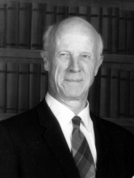

Please note: the AAS Obituaries are temporarily being hosted on this website while their full content is being ingested into the PubPub publishing platform newly adopted by the Bulletin of the American Astronomical Society. When the migration is complete, your existing links will take you to the final, migrated content. Contact peter.williams@aas.org with any questions.
Harrison Shepler Mendenhall (1903-2000)
Harrison Shepler Mendenhall, emeritus professor of mathematics at Oklahoma State University, died Monday, March 20, 2000, in Stillwater, Oklahoma, at the age of 97.
He was born February 2, 1903, to Albert Isaac and Margaret A. Shepler Mendenhall in Dayton, Ohio, where he grew up and graduated from high school. After receiving his AB in 1924 from Miami University in Oxford, Ohio, he moved to California as a Lick Observatory fellow, and earned his PhD in astrophysics from Berkeley in 1929. His research involved such topics as spectrographic studies of Beta Cephei and the orbit of Van Biesbroeck's Comet (Comet J 1925).
Mendenhall's first academic appointment was at Montana State University in Bozeman, where he began teaching mathematics in 1929. In 1937 he moved to Oklahoma State University (OSU) as an associate professor of mathematics and astronomy. As OSU's pioneering astronomer, he expanded the school's one-semester astronomy curriculum by introducing courses in laboratory astronomy, nautical astronomy, general astronomy, celestial mechanics, and astrophysics over the following eight years. From 1942 until 1945, Mendenhall also served in the US Army Air Corps as a First Lieutenant and Captain, teaching navigation to many cadets. He retired in 1968, and was honored in 1990 by having an Emeritus Mathematics Faculty scholarship named for him.
In retirement, Mendenhall continued actively to pursue many of his other interests. He was a lover of music, especially opera, and of square dancing, art, photography, and nature. In his shop, he enjoyed fashioning furniture and picture frames from wood, and constructing wind chimes from odds and ends. Outdoors, he loved camping, hiking, fly fishing, canoeing, and birdwatching.
In addition, Harrison Mendenhall was a generous man known for acquiring and refurbishing discarded items for charity, and for delivering "Meals on Wheels." Ever the astronomer, though, he continued to share his knowledge of the heavens with everyone who was interested—his personal instrument was a 4-inch Mogey refractor manufactured in the early 1890s. His love of astronomy and sense of generosity merged in the development of OSU's astronomical observatory, which is now being designed. It was made possible by his philanthropy and will be named in his honor.
Professor Mendenhall was predeceased by his wife of 72 years, Phyllis Jewett, on March 5, 1997, and by his parents. The Society extends its heartfelt condolences to his daughter Peggy Lawson, grandchildren Steve, Jeffrey, and Roger, great-grandchildren Tristan and Brianna, and nieces Ann and Theresa O'Brien.
Photo courtesy of the Mendenhall Family
Obituary written by: Peggy M. Lawson (Oklahoma State University), Peter Shull, Jr. (Oklahoma State University)
BAAS Citation: BAAS, 2000, 32, 1679
SAO/NASA ADS Bibcode: 2000BAAS...32.1679L